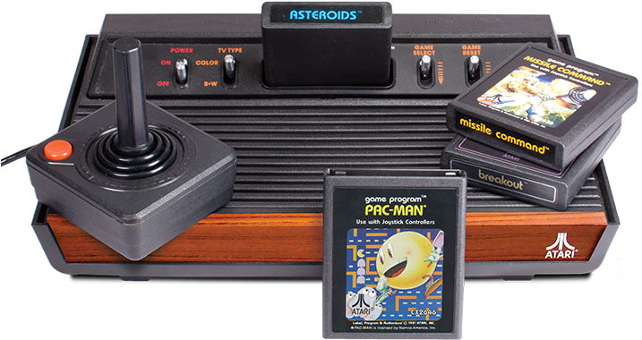

ATARI
R$500
O Atari 2600 é um console de videogame clássico que marcou uma geração. Desenvolvido pela Atari, uma das
pioneiras no ramo dos jogos eletrônicos, o Atari 2600 foi lançado em 1977 e se tornou um sucesso imediato.
Com seu design icônico e controles simples, o Atari 2600 conquistou milhões de jogadores ao redor do mundo.